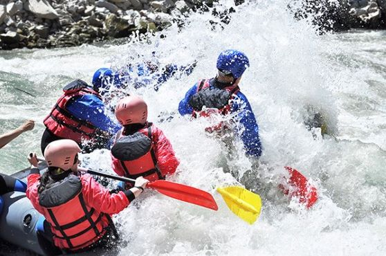

Our mission is to provide thrilling and safe rafting experiences for adventurers of all levels.
Whitewater Rafting Co.
History
Founded in 2013, Whitewater Rafting Co. began as a small family-run business with a simple yet powerful vision: to share the thrill of whitewater rafting with adventurers of all experience levels. What started as a passion project with just a couple of rafts and a handful of guides has grown into a premier outdoor adventure company, recognized for its commitment to safety, excellence, and unforgettable experiences.
Our story began on the banks of the Colorado River, where our founders—avid rafters and nature lovers—saw an opportunity to combine their love for the outdoors with a business dedicated to adventure tourism. They believed that rafting was more than just a sport; it was a way to connect with nature, escape the daily grind, and challenge oneself in a breathtaking environment. With just a few rafts, a dream, and a commitment to providing top-tier experiences, our company took off. In the early days, trips were small, word spread through local outdoor communities, and customers returned year after year, bringing friends and family along.
Adventure Awaits You!
At Whitewater Rafting Co., we believe adventure is all about embracing the thrill and creating unforgettable memories. Whether you're paddling through roaring rapids or simply enjoying the serene beauty of nature, every moment is an opportunity to connect with the wild.
